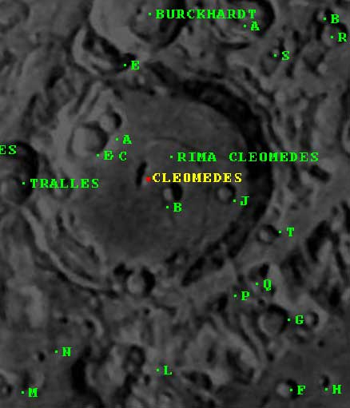

Welcome to the Mathematical World!
Cleomedes
Greek Astronomer and Natural Philosopher
Cleomedes (fl. late 1st or early 2nd century CE) was a Greek astronomer and natural philosopher, known for his preserved treatise On the Circular Motions of the Celestial Bodies. This work serves as one of the most important sources for our knowledge of ancient astronomy, preserving doctrines of earlier thinkers like Posidonius, Hipparchus, and Eratosthenes.
Cleomedes’ treatise was essentially a textbook of astronomy for students, blending mathematical reasoning with natural philosophy. He explained basic geometrical models of planetary motion, such as the eccentric and epicyclic theories, which were designed to account for irregularities in planetary paths while maintaining uniform circular motion. His explanations often drew on simple geometrical constructions, making mathematical astronomy more accessible.
One of Cleomedes’ most significant contributions was his account of Eratosthenes’ measurement of the Earth’s circumference. He explained how Eratosthenes used the difference in the Sun’s zenith angle at Syene and Alexandria at the summer solstice to calculate the Earth’s size, obtaining a figure of approximately 252,000 stadia. Cleomedes preserved this geometric reasoning, which otherwise might have been lost.
Cleomedes also discussed the geometry of eclipses, the phases of the Moon, and the apparent brightness of stars. He emphasized the spherical nature of the Earth, providing arguments from lunar eclipses, star visibility, and the curvature of the horizon. His work contains one of the clearest expositions of the idea that Earth is suspended in space as a sphere, not resting on any support.
While Cleomedes himself may not have been a highly original theorist, his role as a transmitter and explicator of mathematical astronomy was vital. His clear presentation of geometrical reasoning in astronomy influenced later Byzantine and Islamic scholars. In this way, Cleomedes ensured the survival of core mathematical and astronomical concepts from the Hellenistic tradition into late antiquity and beyond.